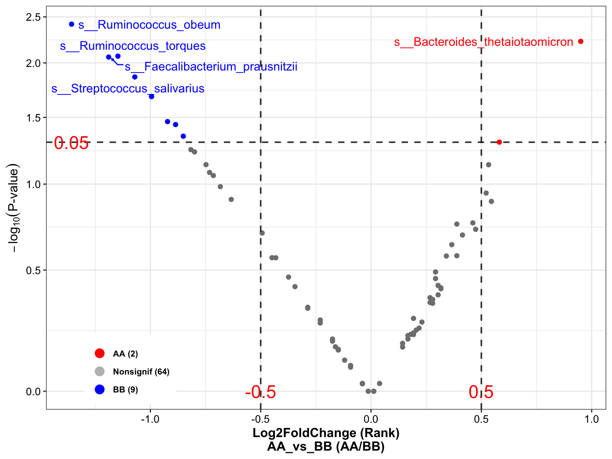
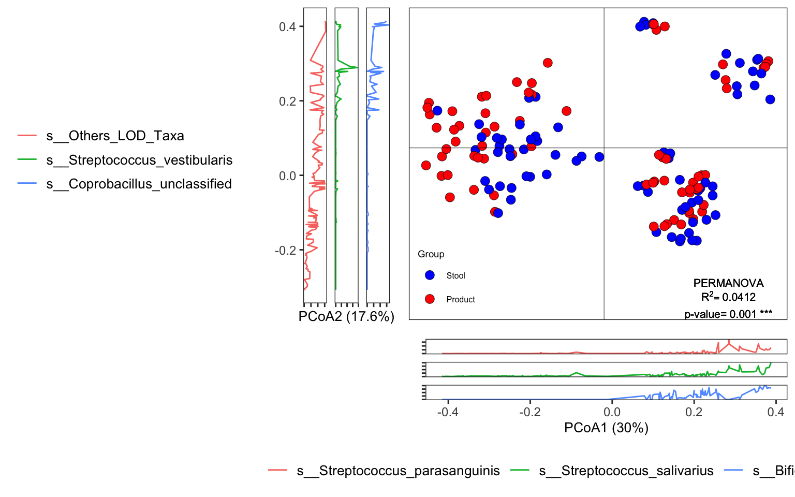
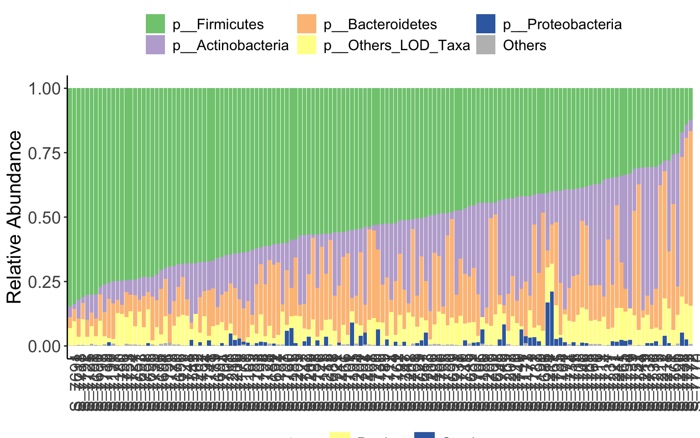
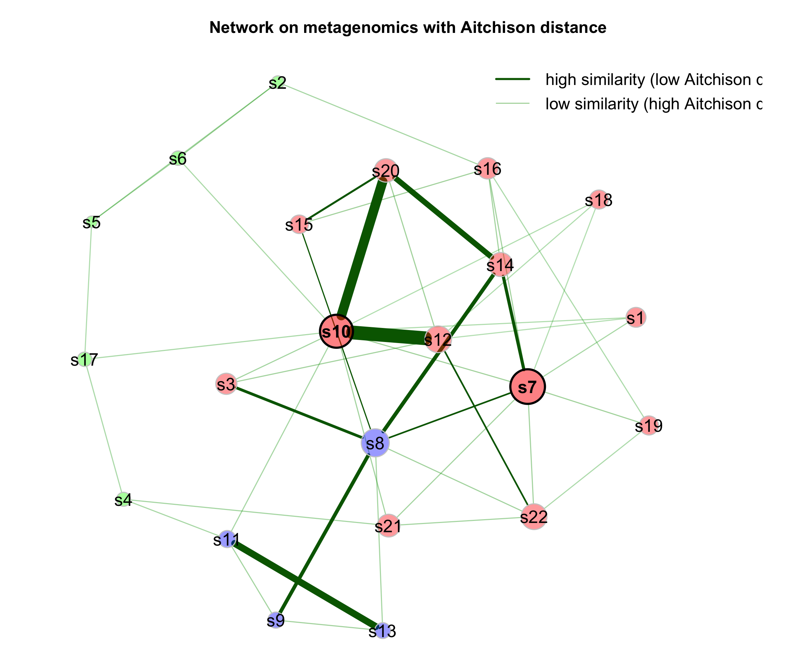
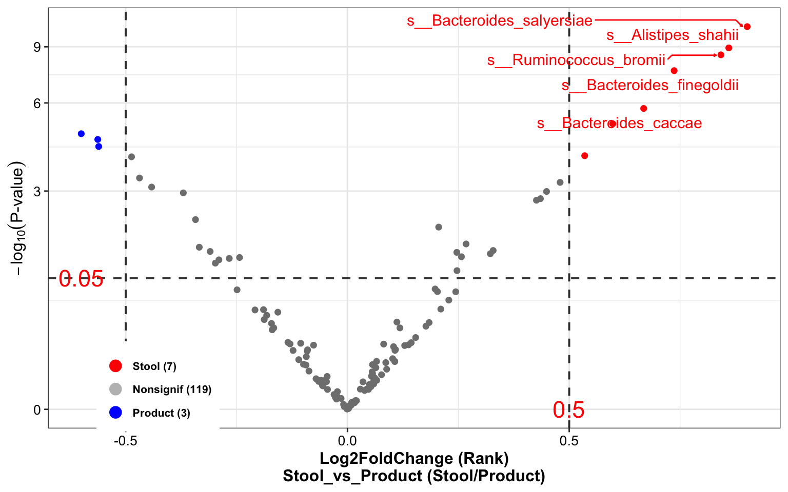

Chapter 9 Test Example
9.1 Loading packages
library(XMAS2)
library(dplyr)
library(tibble)
library(phyloseq)
library(ggplot2)
library(ggpubr)
library(readxl)9.2 Loading data
metaphlan2_res <- read.table("DataSet/RawData/merged_metaphlan2.tsv",
header = TRUE, stringsAsFactors = FALSE) %>%
tibble::rownames_to_column("ID")
metadata <- read_xlsx("DataSet/RawData/诺禾宏基因组678月-ZH.xlsx", sheet = 3)9.3 Step1: Convert inputs into phyloseq data
metaphlan2_res_list <- import_metaphlan_taxa(metaphlan2_res, taxa_level = "Species")
tax_tab <- metaphlan2_res_list$tax_tab
otu_tab <- metaphlan2_res_list$abu_tab
colnames(otu_tab) <- gsub("X", "S_", colnames(otu_tab))
sam_tab <- metadata %>% data.frame() %>%
dplyr::mutate(Group=ifelse(SampleType == "粪便", "Stool",
ifelse(SampleType == "QC", "QC", "Product"))) %>%
dplyr::select(SampleTubeID, Group, everything())
rownames(sam_tab) <- paste0("S_", sam_tab$SeqID_MGS)
overlap_samples <- intersect(rownames(sam_tab), colnames(otu_tab))
otu_tab_cln <- otu_tab[, match(overlap_samples, colnames(otu_tab))]
sam_tab_cln <- sam_tab[match(overlap_samples, rownames(sam_tab)), ]
rownames(sam_tab_cln) <- overlap_samples
metaphlan2_ps <- get_metaphlan_phyloseq(otu_tab = otu_tab_cln,
sam_tab = sam_tab_cln,
tax_tab = tax_tab)
metaphlan2_ps## phyloseq-class experiment-level object
## otu_table() OTU Table: [ 328 taxa and 145 samples ]
## sample_data() Sample Data: [ 145 samples by 12 sample variables ]
## tax_table() Taxonomy Table: [ 328 taxa by 7 taxonomic ranks ]if (!dir.exists("DataSet/Step1/")) {
dir.create("DataSet/Step1/")
}
saveRDS(metaphlan2_ps, "DataSet/Step1/Donor_MGS_phyloseq.RDS", compress = TRUE)9.4 Step2: Transform limit of detection (LOD) into Zeros
# species
metaphlan2_ps_LOD_species <- aggregate_LOD_taxa(metaphlan2_ps,
taxa_level = "Species",
cutoff = 1e-04)
# genus
metaphlan2_ps_LOD_genus <- aggregate_LOD_taxa(metaphlan2_ps,
taxa_level = "Genus",
cutoff = 1e-04)
# order
metaphlan2_ps_LOD_order <- aggregate_LOD_taxa(metaphlan2_ps,
taxa_level = "Order",
cutoff = 1e-04)
if (!dir.exists("DataSet/Step2/")) {
dir.create("DataSet/Step2/")
}
saveRDS(metaphlan2_ps_LOD_species, "DataSet/Step2/Donor_MGS_phyloseq_LOD_species.RDS", compress = TRUE)
saveRDS(metaphlan2_ps_LOD_genus, "DataSet/Step2/Donor_MGS_phyloseq_LOD_genus.RDS", compress = TRUE)
saveRDS(metaphlan2_ps_LOD_order, "DataSet/Step2/Donor_MGS_phyloseq_LOD_order.RDS", compress = TRUE)9.5 Step3: BRS checking
metaphlan2_ps <- readRDS("DataSet/Step1/Donor_MGS_phyloseq.RDS")
metaphlan2_ps_LOD_species <- aggregate_LOD_taxa(metaphlan2_ps,
taxa_level = "Species",
cutoff = 1e-04)
tail(metaphlan2_ps_LOD_species@sam_data %>% data.frame())## SampleTubeID Group Date_Sequencing ProductID SampleType ProductBatch Date_Sampling Date_Receiving SeqID_MGS
## S_7769 GGM50-210730 Stool 2021-08-03 M50 粪便 CYM50-210735 2021.07.30 2021-08-06 7769
## S_7770 CYM50-210735-0727 Product 2021-08-03 M50 肠菌胶囊 CYM50-210735 2021.07.27 2021-08-06 7770
## S_7771 CYM50-210735-0728 Product 2021-08-03 M50 肠菌胶囊 CYM50-210735 2021.07.28 2021-08-06 7771
## S_7772 CYM50-210735-0729 Product 2021-08-03 M50 肠菌胶囊 CYM50-210735 2021.07.29 2021-08-06 7772
## S_7773 CYM50-210735-0730 Product 2021-08-03 M50 肠菌胶囊 CYM50-210735 2021.07.30 2021-08-06 7773
## S_7222 Community QC <NA> Ref QC <NA> <NA> <NA> 7222
## SeqID_16s Pipeline_MGS
## S_7769 7929 /share/work/HPC/work_tmp/PipelineJob_180_20210923/output
## S_7770 7930 /share/work/HPC/work_tmp/PipelineJob_180_20210923/output
## S_7771 7931 /share/work/HPC/work_tmp/PipelineJob_180_20210923/output
## S_7772 7932 /share/work/HPC/work_tmp/PipelineJob_180_20210923/output
## S_7773 7933 /share/work/HPC/work_tmp/PipelineJob_180_20210923/output
## S_7222 7327 /share/work/HPC/work_tmp/PipelineJob_180_20210923/output
## Pipeline_16s
## S_7769 /share/projects/Engineering/pipeline_output/PipelineJob_304_20211203
## S_7770 /share/projects/Engineering/pipeline_output/PipelineJob_304_20211203
## S_7771 /share/projects/Engineering/pipeline_output/PipelineJob_304_20211203
## S_7772 /share/projects/Engineering/pipeline_output/PipelineJob_304_20211203
## S_7773 /share/projects/Engineering/pipeline_output/PipelineJob_304_20211203
## S_7222 /share/projects/Engineering/pipeline_output/PipelineJob_304_20211203run_RefCheck(
ps=metaphlan2_ps_LOD_species,
BRS_ID="S_7222",
Reference=NULL,
Ref_type="MGS",
Save=NULL)## 7682 7683 7684 7685 7842 7843 7844 7845 S_7222 mean
## Escherichia_coli 8.77158 8.33337 7.70416 8.11247 10.44118 10.33823 9.96261 11.06988 9.85431 9.398643
## Enterococcus_faecalis 11.46778 12.46200 11.92117 11.95884 13.71474 13.67805 13.21782 13.27297 17.19286 13.209581
## Impurity_level 7.33876 7.34799 7.14891 6.47250 8.88190 9.72198 9.72162 10.57600 72.95000 15.573296
## Evaluation
## Escherichia_coli S_7222 didn't pass the threshold (2022-06-29 15:42:20).
## Enterococcus_faecalis S_7222 didn't pass the threshold (2022-06-29 15:42:20).
## Impurity_level S_7222 didn't pass the threshold (2022-06-29 15:42:20).metaphlan2_ps_LOD_species_remove_BRS <- get_GroupPhyloseq(
ps = metaphlan2_ps_LOD_species,
group = "Group",
group_names = "QC",
discard = TRUE)
metaphlan2_ps_LOD_species_remove_BRS## phyloseq-class experiment-level object
## otu_table() OTU Table: [ 180 taxa and 144 samples ]
## sample_data() Sample Data: [ 144 samples by 12 sample variables ]
## tax_table() Taxonomy Table: [ 180 taxa by 7 taxonomic ranks ]if (!dir.exists("DataSet/Step3/")) {
dir.create("DataSet/Step3/")
}
saveRDS(metaphlan2_ps_LOD_species_remove_BRS, "DataSet/Step3/Donor_MGS_phyloseq_LOD_species_remove_BRS.RDS", compress = TRUE)9.6 Step4: Extracting specific taxonomic level
- Removing spike-in sample (BRS)
metaphlan2_ps <- readRDS("DataSet/Step1/Donor_MGS_phyloseq.RDS")
metaphlan2_ps_remove_BRS <- get_GroupPhyloseq(
ps = metaphlan2_ps,
group = "Group",
group_names = "QC",
discard = TRUE)
metaphlan2_ps_LOD_species_remove_BRS## phyloseq-class experiment-level object
## otu_table() OTU Table: [ 180 taxa and 144 samples ]
## sample_data() Sample Data: [ 144 samples by 12 sample variables ]
## tax_table() Taxonomy Table: [ 180 taxa by 7 taxonomic ranks ]- Species
metaphlan2_ps_remove_BRS_LOD_species <- aggregate_LOD_taxa(metaphlan2_ps_remove_BRS,
taxa_level = "Species",
cutoff = 1e-04)
metaphlan2_ps_remove_BRS_LOD_species## phyloseq-class experiment-level object
## otu_table() OTU Table: [ 180 taxa and 144 samples ]
## sample_data() Sample Data: [ 144 samples by 12 sample variables ]
## tax_table() Taxonomy Table: [ 180 taxa by 7 taxonomic ranks ]- Genus
metaphlan2_ps_remove_BRS_LOD_genus <- aggregate_LOD_taxa(metaphlan2_ps_remove_BRS,
taxa_level = "Genus",
cutoff = 1e-04)
metaphlan2_ps_remove_BRS_LOD_genus## phyloseq-class experiment-level object
## otu_table() OTU Table: [ 67 taxa and 144 samples ]
## sample_data() Sample Data: [ 144 samples by 12 sample variables ]
## tax_table() Taxonomy Table: [ 67 taxa by 6 taxonomic ranks ]- Phylum
metaphlan2_ps_remove_BRS_LOD_phylum <- aggregate_LOD_taxa(metaphlan2_ps_remove_BRS,
taxa_level = "Phylum",
cutoff = 1e-04)
metaphlan2_ps_remove_BRS_LOD_phylum## phyloseq-class experiment-level object
## otu_table() OTU Table: [ 8 taxa and 144 samples ]
## sample_data() Sample Data: [ 144 samples by 12 sample variables ]
## tax_table() Taxonomy Table: [ 8 taxa by 2 taxonomic ranks ]- output
if (!dir.exists("DataSet/Step4/")) {
dir.create("DataSet/Step4/")
}
saveRDS(metaphlan2_ps_remove_BRS_LOD_species, "DataSet/Step4/Donor_MGS_phyloseq_remove_BRS_LOD_species.RDS", compress = TRUE)
saveRDS(metaphlan2_ps_remove_BRS_LOD_genus, "DataSet/Step4/Donor_MGS_phyloseq_remove_BRS_LOD_genus.RDS", compress = TRUE)
saveRDS(metaphlan2_ps_remove_BRS_LOD_phylum, "DataSet/Step4/Donor_MGS_phyloseq_remove_BRS_LOD_phylum.RDS", compress = TRUE)9.7 Step5: GlobalView
metaphlan2_ps_remove_BRS_LOD_species <- readRDS("DataSet/Step4/Donor_MGS_phyloseq_remove_BRS_LOD_species.RDS")
# alpha
metaphlan2_ps_remove_BRS_species_alpha <- run_alpha_diversity(ps=metaphlan2_ps_remove_BRS_LOD_species,
measures = c("Shannon", "Simpson", "InvSimpson"))
plot_boxplot(data=metaphlan2_ps_remove_BRS_species_alpha,
y_index = c("Shannon", "Simpson", "InvSimpson"),
group = "Group",
group_names = c("Stool", "Product"),
group_color = c("red", "blue"))

Figure 9.1: diversity and ordination and composition(Example)
# beta
metaphlan2_ps_remove_BRS_species_beta <- run_beta_diversity(ps=metaphlan2_ps_remove_BRS_LOD_species, method = "bray")
plot_distance_corrplot(metaphlan2_ps_remove_BRS_species_beta$BetaDistance)Figure 9.2: diversity and ordination and composition(Example)
# permanova
run_permanova(ps=metaphlan2_ps_remove_BRS_LOD_species, method = "bray", columns = "Group")## SumsOfSample Df SumsOfSqs MeanSqs F.Model R2 Pr(>F) AdjustedPvalue
## Group 144 1 1.180628 1.180628 6.109058 0.04124703 0.001 0.001# beta dispersion
beta_df <- run_beta_diversity(ps=metaphlan2_ps_remove_BRS_LOD_species, method = "bray", group = "Group")##
## Permutation test for homogeneity of multivariate dispersions
## Permutation: free
## Number of permutations: 999
##
## Response: Distances
## Df Sum Sq Mean Sq F N.Perm Pr(>F)
## Groups 1 0.01163 0.011631 1.0661 999 0.312
## Residuals 142 1.54928 0.010910
##
## Pairwise comparisons:
## (Observed p-value below diagonal, permuted p-value above diagonal)
## Product Stool
## Product 0.308
## Stool 0.30359# ordination
metaphlan2_ps_ordination <- run_ordination(
ps = metaphlan2_ps_remove_BRS_LOD_species,
group = "Group",
method = "PCoA")
plot_Ordination(ResultList = metaphlan2_ps_ordination,
group = "Group",
group_names = c("Stool", "Product"),
group_color = c("blue", "red"))

Figure 9.3: diversity and ordination and composition(Example)
# Microbial composition
plot_stacked_bar_XIVZ(
phyloseq = metaphlan2_ps_remove_BRS_LOD_species,
level = "Phylum",
feature = "Group")

Figure 9.4: diversity and ordination and composition(Example)
9.8 Step6: Differential Analysis
metaphlan2_ps_remove_BRS_LOD_species <- readRDS("DataSet/Step4/Donor_MGS_phyloseq_remove_BRS_LOD_species.RDS")
# filter & trim
metaphlan2_ps_remove_BRS_species_filter <- run_filter(metaphlan2_ps_remove_BRS_LOD_species, cutoff = 1e-4, unclass = TRUE)
metaphlan2_ps_remove_BRS_species_filter_trim <- run_trim(metaphlan2_ps_remove_BRS_species_filter, cutoff = 0.1, trim = "feature")
metaphlan2_ps_remove_BRS_species_filter_trim## phyloseq-class experiment-level object
## otu_table() OTU Table: [ 129 taxa and 144 samples ]
## sample_data() Sample Data: [ 144 samples by 12 sample variables ]
## tax_table() Taxonomy Table: [ 129 taxa by 7 taxonomic ranks ]# lefse
metaphlan2_ps_lefse <- run_lefse(
metaphlan2_ps_remove_BRS_species_filter_trim,
group = "Group",
group_names = c("Stool", "Product"),
Lda = 2)
# # don't run this code when you do lefse in reality
# metaphlan2_ps_lefse$LDA_Score <- metaphlan2_ps_lefse$LDA_Score * 1000
plot_lefse(
da_res = metaphlan2_ps_lefse,
x_index = "LDA_Score",
x_index_cutoff = 2,
group_color = c("green", "red"))

Figure 9.5: Differential Analysis (Example)
metaphlan2_ps_wilcox <- run_wilcox(
metaphlan2_ps_remove_BRS_species_filter_trim,
group = "Group",
group_names = c("Stool", "Product"))
plot_volcano(
metaphlan2_ps_wilcox,
group_names = c("Stool", "Product"),
x_index = "Log2FoldChange (Rank)\nStool_vs_Product",
x_index_cutoff = 0.5,
y_index = "Pvalue",
y_index_cutoff = 0.05,
group_color = c("red", "grey", "blue"),
topN = 5)

Figure 9.6: Differential Analysis (Example)
if (!dir.exists("DataSet/Step8/")) {
dir.create("DataSet/Step8/")
}
saveRDS(metaphlan2_ps_remove_BRS_species_filter_trim, "DataSet/Step6/Donor_MGS_phyloseq_remove_BRS_species_filter_trim.RDS", compress = TRUE)9.9 Systematic Information
devtools::session_info()## ─ Session info ───────────────────────────────────────────────────────────────────────────────────────────────────────────
## setting value
## version R version 4.1.2 (2021-11-01)
## os macOS Monterey 12.2.1
## system x86_64, darwin17.0
## ui RStudio
## language (EN)
## collate en_US.UTF-8
## ctype en_US.UTF-8
## tz Asia/Shanghai
## date 2022-06-29
## rstudio 2022.02.0+443 Prairie Trillium (desktop)
## pandoc 2.17.1.1 @ /Applications/RStudio.app/Contents/MacOS/quarto/bin/ (via rmarkdown)
##
## ─ Packages ───────────────────────────────────────────────────────────────────────────────────────────────────────────────
## package * version date (UTC) lib source
## abind 1.4-5 2016-07-21 [1] CRAN (R 4.1.0)
## ade4 1.7-18 2021-09-16 [1] CRAN (R 4.1.0)
## ALDEx2 1.26.0 2021-10-26 [1] Bioconductor
## annotate 1.72.0 2021-10-26 [1] Bioconductor
## AnnotationDbi 1.56.2 2021-11-09 [1] Bioconductor
## ape * 5.6-2 2022-03-02 [1] CRAN (R 4.1.2)
## askpass 1.1 2019-01-13 [1] CRAN (R 4.1.0)
## assertthat 0.2.1 2019-03-21 [1] CRAN (R 4.1.0)
## backports 1.4.1 2021-12-13 [1] CRAN (R 4.1.0)
## base64enc 0.1-3 2015-07-28 [1] CRAN (R 4.1.0)
## bayesm 3.1-4 2019-10-15 [1] CRAN (R 4.1.0)
## Biobase * 2.54.0 2021-10-26 [1] Bioconductor
## BiocGenerics * 0.40.0 2021-10-26 [1] Bioconductor
## BiocParallel 1.28.3 2021-12-09 [1] Bioconductor
## biomformat 1.22.0 2021-10-26 [1] Bioconductor
## Biostrings 2.62.0 2021-10-26 [1] Bioconductor
## bit 4.0.4 2020-08-04 [1] CRAN (R 4.1.0)
## bit64 4.0.5 2020-08-30 [1] CRAN (R 4.1.0)
## bitops 1.0-7 2021-04-24 [1] CRAN (R 4.1.0)
## blob 1.2.2 2021-07-23 [1] CRAN (R 4.1.0)
## bookdown 0.24 2021-09-02 [1] CRAN (R 4.1.0)
## brio 1.1.3 2021-11-30 [1] CRAN (R 4.1.0)
## broom 0.7.12 2022-01-28 [1] CRAN (R 4.1.2)
## bslib 0.3.1 2021-10-06 [1] CRAN (R 4.1.0)
## cachem 1.0.6 2021-08-19 [1] CRAN (R 4.1.0)
## callr 3.7.0 2021-04-20 [1] CRAN (R 4.1.0)
## car 3.0-12 2021-11-06 [1] CRAN (R 4.1.0)
## carData 3.0-5 2022-01-06 [1] CRAN (R 4.1.2)
## caTools 1.18.2 2021-03-28 [1] CRAN (R 4.1.0)
## cellranger 1.1.0 2016-07-27 [1] CRAN (R 4.1.0)
## checkmate 2.0.0 2020-02-06 [1] CRAN (R 4.1.0)
## class 7.3-20 2022-01-13 [1] CRAN (R 4.1.2)
## classInt 0.4-3 2020-04-07 [1] CRAN (R 4.1.0)
## cli 3.2.0 2022-02-14 [1] CRAN (R 4.1.2)
## cluster 2.1.2 2021-04-17 [1] CRAN (R 4.1.2)
## codetools 0.2-18 2020-11-04 [1] CRAN (R 4.1.2)
## coin 1.4-2 2021-10-08 [1] CRAN (R 4.1.0)
## colorspace 2.0-3 2022-02-21 [1] CRAN (R 4.1.2)
## compositions 2.0-4 2022-01-05 [1] CRAN (R 4.1.2)
## conflicted * 1.1.0 2021-11-26 [1] CRAN (R 4.1.0)
## corrplot 0.92 2021-11-18 [1] CRAN (R 4.1.0)
## cowplot 1.1.1 2020-12-30 [1] CRAN (R 4.1.0)
## crayon 1.5.0 2022-02-14 [1] CRAN (R 4.1.2)
## crosstalk 1.2.0 2021-11-04 [1] CRAN (R 4.1.0)
## data.table 1.14.2 2021-09-27 [1] CRAN (R 4.1.0)
## DBI 1.1.2 2021-12-20 [1] CRAN (R 4.1.0)
## DelayedArray 0.20.0 2021-10-26 [1] Bioconductor
## DEoptimR 1.0-10 2022-01-03 [1] CRAN (R 4.1.2)
## desc 1.4.1 2022-03-06 [1] CRAN (R 4.1.2)
## DESeq2 1.34.0 2021-10-26 [1] Bioconductor
## devtools 2.4.3 2021-11-30 [1] CRAN (R 4.1.0)
## digest 0.6.29 2021-12-01 [1] CRAN (R 4.1.0)
## dplyr * 1.0.8 2022-02-08 [1] CRAN (R 4.1.2)
## DT 0.21 2022-02-26 [1] CRAN (R 4.1.2)
## e1071 1.7-9 2021-09-16 [1] CRAN (R 4.1.0)
## edgeR 3.36.0 2021-10-26 [1] Bioconductor
## ellipsis 0.3.2 2021-04-29 [1] CRAN (R 4.1.0)
## evaluate 0.15 2022-02-18 [1] CRAN (R 4.1.2)
## fansi 1.0.2 2022-01-14 [1] CRAN (R 4.1.2)
## farver 2.1.0 2021-02-28 [1] CRAN (R 4.1.0)
## fastmap 1.1.0 2021-01-25 [1] CRAN (R 4.1.0)
## foreach 1.5.2 2022-02-02 [1] CRAN (R 4.1.2)
## foreign 0.8-82 2022-01-13 [1] CRAN (R 4.1.2)
## forestplot 2.0.1 2021-09-03 [1] CRAN (R 4.1.0)
## Formula 1.2-4 2020-10-16 [1] CRAN (R 4.1.0)
## fs 1.5.2 2021-12-08 [1] CRAN (R 4.1.0)
## genefilter 1.76.0 2021-10-26 [1] Bioconductor
## geneplotter 1.72.0 2021-10-26 [1] Bioconductor
## generics 0.1.2 2022-01-31 [1] CRAN (R 4.1.2)
## GenomeInfoDb * 1.30.1 2022-01-30 [1] Bioconductor
## GenomeInfoDbData 1.2.7 2022-03-09 [1] Bioconductor
## GenomicRanges * 1.46.1 2021-11-18 [1] Bioconductor
## ggplot2 * 3.3.5 2021-06-25 [1] CRAN (R 4.1.0)
## ggpubr * 0.4.0 2020-06-27 [1] CRAN (R 4.1.0)
## ggrepel 0.9.1 2021-01-15 [1] CRAN (R 4.1.0)
## ggsci 2.9 2018-05-14 [1] CRAN (R 4.1.0)
## ggsignif 0.6.3 2021-09-09 [1] CRAN (R 4.1.0)
## ggVennDiagram 1.2.1 2022-04-13 [1] Github (gaospecial/ggVennDiagram@db6742d)
## glmnet 4.1-3 2021-11-02 [1] CRAN (R 4.1.0)
## glue * 1.6.2 2022-02-24 [1] CRAN (R 4.1.2)
## Gmisc * 3.0.0 2022-01-03 [1] CRAN (R 4.1.2)
## gplots 3.1.1 2020-11-28 [1] CRAN (R 4.1.0)
## gridExtra 2.3 2017-09-09 [1] CRAN (R 4.1.0)
## gtable 0.3.0 2019-03-25 [1] CRAN (R 4.1.0)
## gtools 3.9.2 2021-06-06 [1] CRAN (R 4.1.0)
## highr 0.9 2021-04-16 [1] CRAN (R 4.1.0)
## Hmisc 4.6-0 2021-10-07 [1] CRAN (R 4.1.0)
## htmlTable * 2.4.0 2022-01-04 [1] CRAN (R 4.1.2)
## htmltools 0.5.2 2021-08-25 [1] CRAN (R 4.1.0)
## htmlwidgets 1.5.4 2021-09-08 [1] CRAN (R 4.1.0)
## httr 1.4.2 2020-07-20 [1] CRAN (R 4.1.0)
## igraph 1.2.11 2022-01-04 [1] CRAN (R 4.1.2)
## IRanges * 2.28.0 2021-10-26 [1] Bioconductor
## iterators 1.0.14 2022-02-05 [1] CRAN (R 4.1.2)
## jpeg 0.1-9 2021-07-24 [1] CRAN (R 4.1.0)
## jquerylib 0.1.4 2021-04-26 [1] CRAN (R 4.1.0)
## jsonlite 1.8.0 2022-02-22 [1] CRAN (R 4.1.2)
## kableExtra 1.3.4 2021-02-20 [1] CRAN (R 4.1.2)
## KEGGREST 1.34.0 2021-10-26 [1] Bioconductor
## KernSmooth 2.23-20 2021-05-03 [1] CRAN (R 4.1.2)
## knitr 1.37 2021-12-16 [1] CRAN (R 4.1.0)
## labeling 0.4.2 2020-10-20 [1] CRAN (R 4.1.0)
## lattice * 0.20-45 2021-09-22 [1] CRAN (R 4.1.2)
## latticeExtra 0.6-29 2019-12-19 [1] CRAN (R 4.1.0)
## libcoin 1.0-9 2021-09-27 [1] CRAN (R 4.1.0)
## lifecycle 1.0.1 2021-09-24 [1] CRAN (R 4.1.0)
## limma 3.50.1 2022-02-17 [1] Bioconductor
## locfit 1.5-9.5 2022-03-03 [1] CRAN (R 4.1.2)
## lubridate 1.8.0 2021-10-07 [1] CRAN (R 4.1.0)
## magrittr * 2.0.2 2022-01-26 [1] CRAN (R 4.1.2)
## MASS 7.3-55 2022-01-13 [1] CRAN (R 4.1.2)
## Matrix 1.4-0 2021-12-08 [1] CRAN (R 4.1.0)
## MatrixGenerics * 1.6.0 2021-10-26 [1] Bioconductor
## matrixStats * 0.61.0 2021-09-17 [1] CRAN (R 4.1.0)
## mbzinb 0.2 2022-03-16 [1] local
## memoise 2.0.1 2021-11-26 [1] CRAN (R 4.1.0)
## metagenomeSeq 1.36.0 2021-10-26 [1] Bioconductor
## mgcv 1.8-39 2022-02-24 [1] CRAN (R 4.1.2)
## microbiome 1.16.0 2021-10-26 [1] Bioconductor
## modeltools 0.2-23 2020-03-05 [1] CRAN (R 4.1.0)
## multcomp 1.4-18 2022-01-04 [1] CRAN (R 4.1.2)
## multtest 2.50.0 2021-10-26 [1] Bioconductor
## munsell 0.5.0 2018-06-12 [1] CRAN (R 4.1.0)
## mvtnorm 1.1-3 2021-10-08 [1] CRAN (R 4.1.0)
## NADA 1.6-1.1 2020-03-22 [1] CRAN (R 4.1.0)
## nlme * 3.1-155 2022-01-13 [1] CRAN (R 4.1.2)
## nnet 7.3-17 2022-01-13 [1] CRAN (R 4.1.2)
## openssl 2.0.0 2022-03-02 [1] CRAN (R 4.1.2)
## permute * 0.9-7 2022-01-27 [1] CRAN (R 4.1.2)
## pheatmap 1.0.12 2019-01-04 [1] CRAN (R 4.1.0)
## phyloseq * 1.38.0 2021-10-26 [1] Bioconductor
## picante * 1.8.2 2020-06-10 [1] CRAN (R 4.1.0)
## pillar 1.7.0 2022-02-01 [1] CRAN (R 4.1.2)
## pkgbuild 1.3.1 2021-12-20 [1] CRAN (R 4.1.0)
## pkgconfig 2.0.3 2019-09-22 [1] CRAN (R 4.1.0)
## pkgload 1.2.4 2021-11-30 [1] CRAN (R 4.1.0)
## plyr 1.8.6 2020-03-03 [1] CRAN (R 4.1.0)
## png 0.1-7 2013-12-03 [1] CRAN (R 4.1.0)
## prettyunits 1.1.1 2020-01-24 [1] CRAN (R 4.1.0)
## processx 3.5.2 2021-04-30 [1] CRAN (R 4.1.0)
## protoclust 1.6.3 2019-01-31 [1] CRAN (R 4.1.0)
## proxy 0.4-26 2021-06-07 [1] CRAN (R 4.1.0)
## ps 1.6.0 2021-02-28 [1] CRAN (R 4.1.0)
## pscl 1.5.5 2020-03-07 [1] CRAN (R 4.1.0)
## purrr 0.3.4 2020-04-17 [1] CRAN (R 4.1.0)
## qvalue 2.26.0 2021-10-26 [1] Bioconductor
## R6 2.5.1 2021-08-19 [1] CRAN (R 4.1.0)
## RAIDA 1.0 2022-03-14 [1] local
## RColorBrewer * 1.1-2 2014-12-07 [1] CRAN (R 4.1.0)
## Rcpp * 1.0.8.2 2022-03-11 [1] CRAN (R 4.1.2)
## RcppZiggurat 0.1.6 2020-10-20 [1] CRAN (R 4.1.0)
## RCurl 1.98-1.6 2022-02-08 [1] CRAN (R 4.1.2)
## readxl * 1.4.0 2022-03-28 [1] CRAN (R 4.1.2)
## remotes 2.4.2 2021-11-30 [1] CRAN (R 4.1.0)
## reshape2 1.4.4 2020-04-09 [1] CRAN (R 4.1.0)
## reticulate 1.24 2022-01-26 [1] CRAN (R 4.1.2)
## Rfast 2.0.6 2022-02-16 [1] CRAN (R 4.1.2)
## rhdf5 2.38.1 2022-03-10 [1] Bioconductor
## rhdf5filters 1.6.0 2021-10-26 [1] Bioconductor
## Rhdf5lib 1.16.0 2021-10-26 [1] Bioconductor
## rlang 1.0.2 2022-03-04 [1] CRAN (R 4.1.2)
## rmarkdown 2.13 2022-03-10 [1] CRAN (R 4.1.2)
## robustbase 0.93-9 2021-09-27 [1] CRAN (R 4.1.0)
## rpart 4.1.16 2022-01-24 [1] CRAN (R 4.1.2)
## rprojroot 2.0.2 2020-11-15 [1] CRAN (R 4.1.0)
## RSpectra 0.16-0 2019-12-01 [1] CRAN (R 4.1.0)
## RSQLite 2.2.10 2022-02-17 [1] CRAN (R 4.1.2)
## rstatix 0.7.0 2021-02-13 [1] CRAN (R 4.1.0)
## rstudioapi 0.13 2020-11-12 [1] CRAN (R 4.1.0)
## Rtsne 0.15 2018-11-10 [1] CRAN (R 4.1.0)
## RVenn 1.1.0 2019-07-18 [1] CRAN (R 4.1.0)
## rvest 1.0.2 2021-10-16 [1] CRAN (R 4.1.0)
## S4Vectors * 0.32.3 2021-11-21 [1] Bioconductor
## sandwich 3.0-1 2021-05-18 [1] CRAN (R 4.1.0)
## sass 0.4.0 2021-05-12 [1] CRAN (R 4.1.0)
## scales 1.1.1 2020-05-11 [1] CRAN (R 4.1.0)
## sessioninfo 1.2.2 2021-12-06 [1] CRAN (R 4.1.0)
## sf 1.0-7 2022-03-07 [1] CRAN (R 4.1.2)
## shape 1.4.6 2021-05-19 [1] CRAN (R 4.1.0)
## stringi 1.7.6 2021-11-29 [1] CRAN (R 4.1.0)
## stringr 1.4.0 2019-02-10 [1] CRAN (R 4.1.0)
## SummarizedExperiment * 1.24.0 2021-10-26 [1] Bioconductor
## survival 3.3-1 2022-03-03 [1] CRAN (R 4.1.2)
## svglite 2.1.0 2022-02-03 [1] CRAN (R 4.1.2)
## systemfonts 1.0.4 2022-02-11 [1] CRAN (R 4.1.2)
## tensorA 0.36.2 2020-11-19 [1] CRAN (R 4.1.0)
## testthat 3.1.2 2022-01-20 [1] CRAN (R 4.1.2)
## TH.data 1.1-0 2021-09-27 [1] CRAN (R 4.1.0)
## tibble * 3.1.6 2021-11-07 [1] CRAN (R 4.1.0)
## tidyr 1.2.0 2022-02-01 [1] CRAN (R 4.1.2)
## tidyselect 1.1.2 2022-02-21 [1] CRAN (R 4.1.2)
## truncnorm 1.0-8 2018-02-27 [1] CRAN (R 4.1.0)
## umap 0.2.8.0 2022-03-23 [1] CRAN (R 4.1.2)
## units 0.8-0 2022-02-05 [1] CRAN (R 4.1.2)
## usethis 2.1.5 2021-12-09 [1] CRAN (R 4.1.0)
## utf8 1.2.2 2021-07-24 [1] CRAN (R 4.1.0)
## vctrs 0.3.8 2021-04-29 [1] CRAN (R 4.1.0)
## vegan * 2.5-7 2020-11-28 [1] CRAN (R 4.1.0)
## viridis * 0.6.2 2021-10-13 [1] CRAN (R 4.1.0)
## viridisLite * 0.4.0 2021-04-13 [1] CRAN (R 4.1.0)
## webshot 0.5.3 2022-04-14 [1] CRAN (R 4.1.2)
## withr 2.5.0 2022-03-03 [1] CRAN (R 4.1.2)
## Wrench 1.12.0 2021-10-26 [1] Bioconductor
## xfun 0.30 2022-03-02 [1] CRAN (R 4.1.2)
## XMAS2 * 2.1.5 2022-06-29 [1] local
## XML 3.99-0.9 2022-02-24 [1] CRAN (R 4.1.2)
## xml2 1.3.3 2021-11-30 [1] CRAN (R 4.1.0)
## xtable 1.8-4 2019-04-21 [1] CRAN (R 4.1.0)
## XVector 0.34.0 2021-10-26 [1] Bioconductor
## yaml 2.3.5 2022-02-21 [1] CRAN (R 4.1.2)
## zCompositions 1.4.0 2022-01-13 [1] CRAN (R 4.1.2)
## zlibbioc 1.40.0 2021-10-26 [1] Bioconductor
## zoo 1.8-9 2021-03-09 [1] CRAN (R 4.1.0)
##
## [1] /Library/Frameworks/R.framework/Versions/4.1/Resources/library
##
## ──────────────────────────────────────────────────────────────────────────────────────────────────────────────────────────